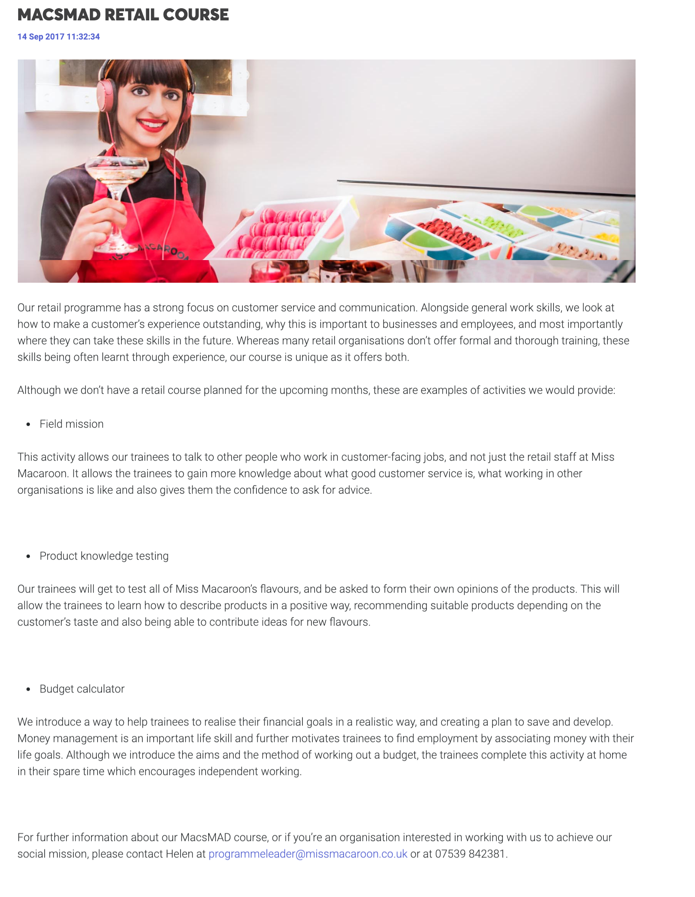
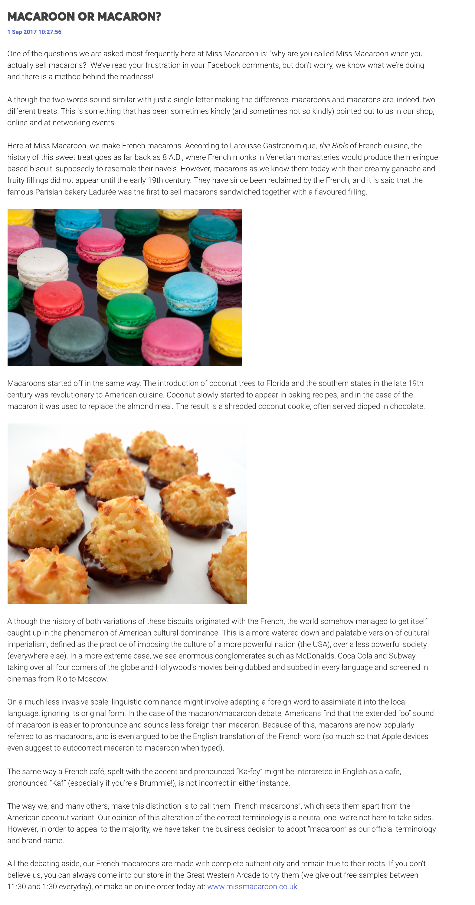
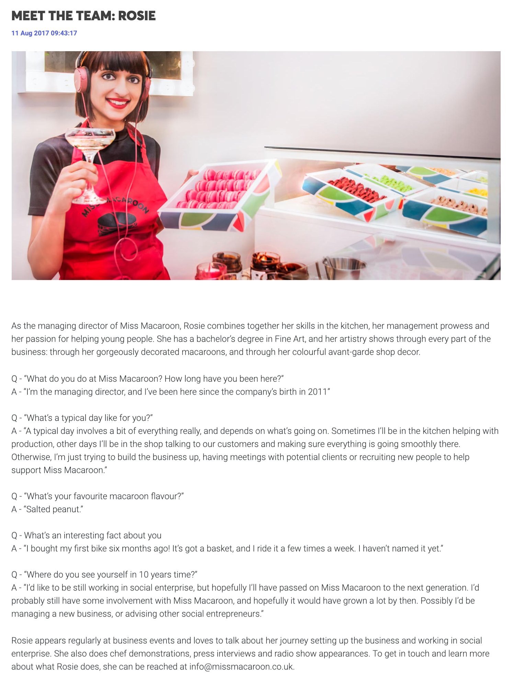

Miss Macaroon blog management
Writing blog posts to support Miss Macaroon's SEO and brand image strategy.
Miss Macaroon | 2017 | Copywriting
The purpose of this post was to provide details about the company's social enterprise efforts, and serves as a "More Information" link on social media posts. Keeping informational posts about the company on their blog would encourage visitors to explore the site, and possibly achieve other conversions.
The purpose of this post was to keep web visitors interested, and support the site's SEO strategy.
This post was part of a series, intended to reveal a human side to the company and help the customer to build a relationship with the brand. It allowed a face and personality to be associated with the Miss Macaroon brand.
This was a seasonal post, with the idea to keep up with trends and appeal to Miss Macaroon's desired audience. Additionally, it was written to promote the special instore prosecco offer, with a view to drive customers to the retail shop.